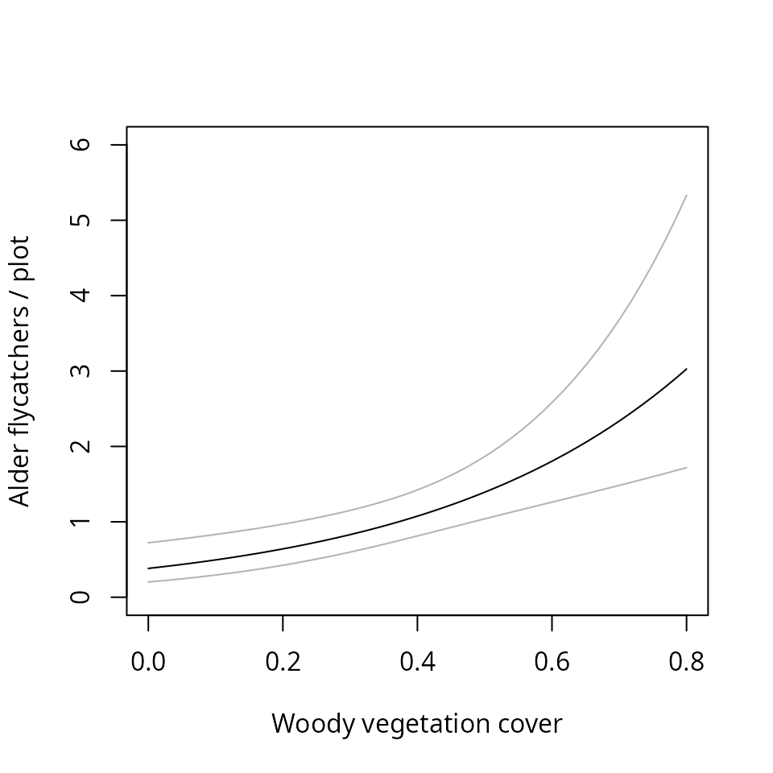

vignettes/cap-recap.Rmd
cap-recap.RmdThe “un” in unmarked is somewhat misleading because the package can be used to analyze data from marked animals. The three most common sampling methods that produce suitable data are removal sampling, double observer sampling, and capture-recapture methods. This document focuses on the analysis of capture-recapture data using a class of models known as multinomial -mixture models (Royle 2004, Dorazio et al. 2005), which assume that capture-recapture data have been collected at a collection of sample locations (“sites”). Capture-recapture models can be fitted with constant parameters (), time-specific parameters (), and behavioral responses (). In addition, spatial variation in abundance and capture probability can also be modeled using covariates. unmarked has two functions for fitting capture-recapture models: multinomPois and gmultmix. Both allow for user-defined functions to describe the capture process, and the latter allows for modeling of temporary emigration when data have been collected using the so-called robust design (Kendall et al. 1997, Chandler et al. 2011).
In traditional capture-recapture models, individuals are captured at a site during the course of sampling occasions. The encounter history for each individual is used as information about capture probability such that the total population size can be regarded as the size parameter of a binomial distribution, .
Although traditional capture-recapture models are useful for estimating population size when , they do not allow one to model variation in abundance, which is a central focus of much ecological research. Royle (2004) and Dorazio et al. (2005) developed a framework for modeling variation in both abundance and capture probability when capture-recapture data are collected at a set of sites. Site-specific abundance () is regarded as latent variable following a discrete distribution such as the Poisson or negative binomial. The encounter histories are then tabulated at each site so that they can be regarded as an outcome of a multinomial distribution with cell probabilities $\bf \pi$ determined by a protocol-specific function of capture probability. Assuming a Poisson distribution, the model can be written as $$ \begin{gather} N_i \sim \mbox{Poisson}(\lambda) \nonumber \\ {\bf y_i}|N_i \sim \mbox{Multinomial}(N_i, \pi(p)) \label{mod} \end{gather} $$ In the above, is the expected number of individuals at each site. ${\bf y_i}$ is a vector containing the number of individuals with encounter history at site . The number of observable encounter histories depends on the sampling protocol. For a capture-recapture study with 2 occasions, there are 3 possible encounter histories . In Equation 1, is a function that that converts capture probability to multinomial cell probabilities, , the proportion of individuals expected to have capture history . For example, the cell probabilities corresponding to the capture histories listed above are
$$ {\bf \pi}(p) = \{ p^2, p(1-p), (1-p)p \}. $$
The probability of not capturing an individual in this case () is .
Spatial variation in abundance can be modeled using covariates with a log-link function where is some site-specific covariate such as habitat type or elevation. Multiple covariates can be considered and a more general form of the above can be written as $\log(\lambda_i) = {\bf X}_i' \bf \beta$ where ${\bf X}$ is a design matrix and ${\bf \beta}$ is a vector of coefficients, possibly including an intercept. Capture probability can be modeled using the logit-link in much the same way where is some covariate specific to the site and capture occasion. When is assumed to be constant, the model is often referred to as model . Alternatively, may be occasion-specific (model ) or may be influenced by animal behavior (model ). Otis et al. (1978) and Williams et al. (2002) are comprehensive references.
As previously mentioned, the data required by unmarked are an matrix in which each row is the vector of tabulated encounter histories for animals captured at some site. Capture-recapture data, however, is typically recorded in the format shown in Table 1.
| Animal ID | Site | Capture history |
|---|---|---|
| GB | A | 101 |
| YR | A | 101 |
| RO | A | 111 |
| PP | A | 100 |
| GY | B | 100 |
| PR | B | 010 |
In the absence of individual covariates, the data in Table 1 can be converted to the requisite format as shown in Table 2. Notice that no captures were made in sites C and D. It is important that such sites are retained in the analysis in order to make inference about spatial variation in abundance.
| Site | 100 | 010 | 001 | 110 | 011 | 101 | 111 |
|---|---|---|---|---|---|---|---|
| A | 1 | 0 | 0 | 0 | 0 | 2 | 1 |
| B | 1 | 1 | 0 | 0 | 0 | 0 | 0 |
| C | 0 | 0 | 0 | 0 | 0 | 0 | 0 |
| D | 0 | 0 | 0 | 0 | 0 | 0 | 0 |
In this example we will analyze point count data collected on alder flycatchers (Empidonax alnorum) by Chandler et al. (2009). Point count data such as these are collected on unmarked animals, but one can apply capture-recapture models because it is possible to keep track of individual birds during a short period of time (Alldredge et al. 2007). That is, we can pretend like birds are marked by noting which time intervals they are detected in during a short survey. The alder flycatcher data were collected using fixed-area 15-minute point counts, which were divided into 3 5-minute intervals. Each point was surveyed 3 times during 2005. The following command imports the capture histories for 50 individuals detected in 2005 at 49 point count locations.
alfl <- read.csv(system.file("csv", "alfl.csv", package="unmarked"))
head(alfl, 5)## id survey interval1 interval2 interval3
## 1 crick1_05 1 1 1 1
## 2 crick1_05 3 1 0 1
## 3 his1_05 1 0 1 1
## 4 his1_05 1 1 1 1
## 5 his1_05 2 0 1 1We see 5 rows of data representing the encounter histories for 5 birds detected at 2 points during 3 survey occasions. From these 5 birds, it appears as though detection probability is high since each bird was detected during at least 2 of the three time intervals.
Associated with the bird data are site- and visit-specific covariates for each of the 49 sites. We can import these data using the following command:
alfl.covs <- read.csv(system.file("csv", "alflCovs.csv",
package="unmarked"), row.names=1)
head(alfl.covs)## struct woody time.1 time.2 time.3 date.1 date.2 date.3
## crick1_05 5.45 0.30 8.68 8.73 5.72 6 25 34
## his1_05 4.75 0.05 9.43 7.40 7.58 20 32 54
## hisw1_05 14.70 0.35 8.25 6.70 7.62 20 32 47
## hisw2_05 5.05 0.30 7.77 6.23 7.17 20 32 47
## kenc1_05 4.15 0.10 9.57 9.55 5.73 8 27 36
## kenc2_05 9.75 0.40 9.10 9.12 9.12 8 27 36Each row of this data.frame corresponds to a point count location. The variable struct is a measure of vegetation structure, and woody is the percent cover of woody vegetation at each of the 50-m radius plots. Time of day and date were measured for each of the three visits.
To format the data for unmarked, we need to tabulate the encounter histories for each site. Before doing so, let’s first put our capture histories in a single column. Let’s also be explicit about the levels of our factors for both the newly created captureHistory column and the point id column.
alfl$captureHistory <- paste(alfl$interval1, alfl$interval2, alfl$interval3, sep="")
alfl$captureHistory <- factor(alfl$captureHistory,
levels=c("001", "010", "011", "100", "101", "110", "111"))
## Don't do this:
#levels(alfl$id) <- rownames(alfl.covs)
alfl$id <- factor(alfl$id, levels=rownames(alfl.covs))Specifying the levels of captureHistory ensures that when we tabulate the encounter histories, we will include zeros for histories that were not observed. Similarly, setting the levels of alfl$id tells R that there were some sites where no ALFL were detected. This way, when we tabulate the data, we get a frequency for each site, not just the ones with >1 detection. Here are the commands to extract data from the first primary period and to tabulate the encounter histories.
alfl.v1 <- alfl[alfl$survey==1,]
alfl.H1 <- table(alfl.v1$id, alfl.v1$captureHistory)
head(alfl.H1, 5)##
## 001 010 011 100 101 110 111
## crick1_05 0 0 0 0 0 0 1
## his1_05 0 0 1 0 0 0 1
## hisw1_05 0 0 0 0 0 0 0
## hisw2_05 0 0 0 0 0 0 1
## kenc1_05 0 0 0 0 0 0 0The object alfl.H1 contains the tabulated capture histories for each site. This is the format required by unmarked. The data from the first 5 sites suggest that detection probability was high since the most common encounter history was 111.
Now we are almost ready to create our unmarkedFrame and begin fitting models. We will fit our first series of models using the multinomPois function, which requires data formated using the unmarkedFrameMPois function. This constructor function has an argument , which currently can be set to "removal" or "double", corresponding to removal sampling data and double observer sampling respectively. In doing so, the function automatically creates the function to convert to ${\bf \pi}$. If type is missing, however, the user needs to specify a function to convert detection probability to multinomial cell probabilities. In the future, we may add an option to automatically handle standard capture-recapture data too, but here we show how to supply it using a user-defined piFun, which allows flexibility in converting detection probability to multinomial cell probabilities $\bf \pi$. The piFun must take a matrix of detection probabilities with columns (3 in this case), and convert them to a matrix of multinomial cell probabilities with columns. Each column corresponds to the probability of observing the encounter history . Here is a piFun to compute the multinomial cell probabilities when there were 3 sampling occasions. This function allows us to fit models , , or models with covariates of .
crPiFun <- function(p) {
p1 <- p[,1]
p2 <- p[,2]
p3 <- p[,3]
cbind("001" = (1-p1) * (1-p2) * p3,
"010" = (1-p1) * p2 * (1-p3),
"011" = (1-p1) * p2 * p3,
"100" = p1 * (1-p2) * (1-p3),
"101" = p1 * (1-p2) * p3,
"110" = p1 * p2 * (1-p3),
"111" = p1 * p2 * p3)
}To demonstrate how this works, imagine that we surveyed 2 sites and detection probability was constant () among sites and survey occasions. The function converts these capture probabilities to multinomial cell probabilities. Note that these cell probabilities will sum to <1 if capture probability is less than 1 over the 3 occasions.
p <- matrix(0.4, 2, 3)
crPiFun(p)## 001 010 011 100 101 110 111
## [1,] 0.144 0.144 0.096 0.144 0.096 0.096 0.064
## [2,] 0.144 0.144 0.096 0.144 0.096 0.096 0.064
rowSums(crPiFun(p))## [1] 0.784 0.784When providing a user-defined , we also need to provide information about how to handle missing values. That is, if we have a missing value in a covariate, we need to know which values of ${\bf y}$ are affected. In unmarked, this can be done by supplying a mapping-matrix to the obsToY argument in the unmarkedFrameMPois function. obsToY needs to be a matrix of zeros and ones with the number of rows equal to the number of columns for some obsCov, and the number columns equal to the number of columns in ${\bf y}$. If obsToY[j,k]=1, then a missing value in obsCov[i,j] translates to a missing value in y[i,k]. For the capture-recapture data considered here, we can set all elements of obsToY to 1.
o2y <- matrix(1, 3, 7)We are now ready to create the unmarkedFrame. In order to fit model , we need a covariate that references the time interval , which we call intervalMat below. We also provide a couple of site-specific covariates: the percent cover of woody vegetation and vegetation structure.
library(unmarked)
intervalMat <- matrix(c('1','2','3'), 50, 3, byrow=TRUE)
class(alfl.H1) <- "matrix"
umf.cr1 <- unmarkedFrameMPois(y=alfl.H1,
siteCovs=alfl.covs[,c("woody", "struct", "time.1", "date.1")],
obsCovs=list(interval=intervalMat),
obsToY=o2y, piFun="crPiFun")## Warning: obsCovs contains characters. Converting them to factors.Writing a piFun and creating the obsToY object are the hardest parts of a capture-recapture analysis in unmarked. Again, this is done automatically for removal models and double observer models, and we may add an option to do this automatically for capture-recapture data too, but hopefully the flexibility allowed by specifying user-defined functions is evident.
Now that we have our data formatted we can fit some models. The following correspond to model , model , and a model with a continuous covariate effect on .
M0 <- multinomPois(~1 ~1, umf.cr1, engine="R")
Mt <- multinomPois(~interval-1 ~1, umf.cr1, engine="R")
Mx <- multinomPois(~time.1 ~1, umf.cr1, engine="R")The first two models can be fit in other software programs. What is unique about unmarked is that we can also model variation in abundance and detection probability among sites. The following model treats abundance as a function of the percent cover of woody vegetation.
(M0.woody <- multinomPois(~1 ~woody, umf.cr1, engine="R"))##
## Call:
## multinomPois(formula = ~1 ~ woody, data = umf.cr1, engine = "R")
##
## Abundance:
## Estimate SE z P(>|z|)
## (Intercept) -0.962 0.325 -2.96 0.003059
## woody 2.587 0.680 3.80 0.000143
##
## Detection:
## Estimate SE z P(>|z|)
## 1.43 0.216 6.63 3.42e-11
##
## AIC: 245.9301
nd <- data.frame(woody=seq(0, 0.8, length=50))
E.abundance <- predict(M0.woody, type="state", newdata=nd, appendData=TRUE)
plot(Predicted ~ woody, E.abundance, type="l", ylim=c(0, 6),
ylab="Alder flycatchers / plot", xlab="Woody vegetation cover")
lines(lower ~ woody, E.abundance, col=gray(0.7))
lines(upper ~ woody, E.abundance, col=gray(0.7))
What about detection probability? Since there was no evidence of variation in , we can simply back-transform the logit-scale estimate to obtain .
backTransform(M0.woody, type="det")## Backtransformed linear combination(s) of Detection estimate(s)
##
## Estimate SE LinComb (Intercept)
## 0.808 0.0336 1.43 1
##
## Transformation: logisticAs suggested by the raw data, detection probability was very high. The corresponding multinomial cell probabilities can be computed by plugging this estimate of detection probability into our piFun. This getP function makes this easy.
## 001 010 011 100 101 110 111
## 0.03 0.03 0.13 0.03 0.13 0.13 0.53Note that the encounter probability most likely to be observed was 111. In fact was so high that the probability of not detecting an alder flycatcher was essentially zero, .
An animal’s behavior might change after being captured. Both trap avoidance and trap attraction are frequently observed in a variety of taxa. A simple model of these two behaviors is known as model (Otis et al. 1978). The model assumes that newly-captured individuals are captured with probability and then are subsequently recaptured with probability . If , then animals exhibit trap avoidance. In some cases, such as when traps are baited, we might observed in which case the animals are said to be “trap-happy”.
To fit model in unmarked, we need to create a new piFun and we need to provide an occasion-specific covariate (obsCov) that distinguishes the two capture probabilities, and . The simplest possible approach is the following
crPiFun.Mb <- function(p) { # p should have 3 columns
pNaive <- p[,1]
pWise <- p[,3]
cbind("001" = (1-pNaive) * (1-pNaive) * pNaive,
"010" = (1-pNaive) * pNaive * (1-pWise),
"011" = (1-pNaive) * pNaive * pWise,
"100" = pNaive * (1-pWise) * (1-pWise),
"101" = pNaive * (1-pWise) * pWise,
"110" = pNaive * pWise * (1-pWise),
"111" = pNaive * pWise * pWise)
}This function crPiFun.Mb allows capture probability to be modeled as where is simply a dummy variable. Thus, when no site-specific covariates () are included, is either or . The following code constructs a new unmarkedFrame and fits model to the alder flycatcher data.
behavior <- matrix(c('Naive','Naive','Wise'), 50, 3, byrow=TRUE)
umf.cr1Mb <- unmarkedFrameMPois(y=alfl.H1,
siteCovs=alfl.covs[,c("woody", "struct", "time.1")],
obsCovs=list(behavior=behavior),
obsToY=o2y, piFun="crPiFun.Mb")## Warning: obsCovs contains characters. Converting them to factors.
M0 <- multinomPois(~1 ~1, umf.cr1Mb, engine="R")
(Mb <- multinomPois(~behavior-1 ~1, umf.cr1Mb, engine="R"))##
## Call:
## multinomPois(formula = ~behavior - 1 ~ 1, data = umf.cr1Mb, engine = "R")
##
## Abundance:
## Estimate SE z P(>|z|)
## 0.00955 0.142 0.0674 0.946
##
## Detection:
## Estimate SE z P(>|z|)
## behaviorNaive 1.31 0.356 3.69 2.25e-04
## behaviorWise 1.50 0.276 5.44 5.27e-08
##
## AIC: 260.0599AIC gives us no reason to favor model over model . This is perhaps not too surprising given that the alder flycatchers were not actually captured. Here is a command to compute 95% confidence intervals for the two detection probabilities.
## Profiling parameter 1 of 2 ... done.
## Profiling parameter 2 of 2 ... done.## 0.025 0.975
## p(behaviorNaive) 0.6490219 0.8846530
## p(behaviorWise) 0.7290778 0.8890318The function crPiFun.Mb is not generic and could easily be abused. For example, you would get bogus results if you tried to use this function to fit model , or if you incorrectly formatted the behavior covariate. Thus, extreme caution is advised when writing user-defined piFuns.
There are also a few limitations regarding user-defined piFuns. First, they can only take a single argument p, which must be the matrix of detection probabilities. This makes it cumbersome to fit models such as model as described below. It also makes it impossible to fit models such as model . It would be better if piFuns could accept multiple arguments, but this would require some modifications to multinomPois and gmultmix, which we may do in the future.
The capture-recapture models covered thus far assume that variation in capture probability can be explained by site-specific covariates, time, or behavior. Currently, unmarked can not fit so-called individual covariate models, in which heterogeneity in is attributable to animal-specific covariates. However, one could partition the data into strata and analyze the strata separately. For example, sex-specific differences could be studied by dividing the data on males and females into 2 subsets.
Although individual covariate models cannot be considered, it is possible to fit model , which assumes random variation in capture probability among individuals. Here is a piFun, based on code by Andy Royle. It assumes a logit-normal distribution for the random effects These random effects are integrated out of the likelihood to obtain the marginal probability of capture.
MhPiFun <- function(p) {
mu <- qlogis(p[,1]) # logit(p)
sig <- exp(qlogis(p[1,2]))
J <- ncol(p)
M <- nrow(p)
il <- matrix(NA, nrow=M, ncol=7)
dimnames(il) <- list(NULL, c("001","010","011","100","101","110","111"))
for(i in 1:M) {
il[i,1] <- integrate( function(x) {
(1-plogis(mu[i]+x))*(1-plogis(mu[i]+x))*plogis(mu[i]+x)*dnorm(x,0,sig)
}, lower=-Inf, upper=Inf, stop.on.error=FALSE)$value
il[i,2] <- integrate( function(x) {
(1-plogis(mu[i]+x))*plogis(mu[i]+x)*(1-plogis(mu[i]+x))*dnorm(x,0,sig)
}, lower=-Inf, upper=Inf, stop.on.error=FALSE)$value
il[i,3] <- integrate( function(x) {
(1-plogis(mu[i]+x))*plogis(mu[i]+x)*plogis(mu[i]+x)*dnorm(x,0,sig)
}, lower=-Inf, upper=Inf, stop.on.error=FALSE)$value
il[i,4] <- integrate( function(x) {
plogis(mu[i]+x)*(1-plogis(mu[i]+x))*(1-plogis(mu[i]+x))*dnorm(x,0,sig)
}, lower=-Inf, upper=Inf, stop.on.error=FALSE)$value
il[i,5] <- integrate( function(x) {
plogis(mu[i]+x)*(1-plogis(mu[i]+x))*plogis(mu[i]+x)*dnorm(x,0,sig)
}, lower=-Inf, upper=Inf, stop.on.error=FALSE)$value
il[i,6] <- integrate( function(x) {
plogis(mu[i]+x)*plogis(mu[i]+x)*(1-plogis(mu[i]+x))*dnorm(x,0,sig)
}, lower=-Inf, upper=Inf, stop.on.error=FALSE)$value
il[i,7] <- integrate( function(x) {
plogis(mu[i]+x)*plogis(mu[i]+x)*plogis(mu[i]+x)*dnorm(x,0,sig)
}, lower=-Inf, upper=Inf, stop.on.error=FALSE)$value
}
return(il)
}This function does not allow for temporal variation in capture probability because we are using the second column of p as , the parameter governing the variance of the random effects. Once again, this is somewhat clumsy and it would be better to allow piFun to accept additional arguments, which could be controlled from multinomPois using an additional formula. Such features may be added eventually.
Having defined our new piFun, we can fit the model as follows
parID <- matrix(c('p','sig','sig'), 50, 3, byrow=TRUE)
umf.cr2 <- unmarkedFrameMPois(y=alfl.H1,
siteCovs=alfl.covs[,c("woody", "struct", "time.1")],
obsCovs=list(parID=parID),
obsToY=o2y, piFun="MhPiFun")
multinomPois(~parID-1 ~woody, umf.cr2)## Call:
## multinomPois(formula = ~parID - 1 ~ woody, data = umf.cr2)
##
## Abundance:
## Estimate SE z P(>|z|)
## (Intercept) -0.84 0.363 -2.31 0.02078
## woody 2.59 0.680 3.81 0.00014
##
## Detection:
## Estimate SE z P(>|z|)
## parIDp 1.637 0.645 2.54 0.0112
## parIDsig 0.841 0.622 1.35 0.1762
##
## AIC: 242.3731The estimate of is high, indicating the existence of substantial heterogeneity in detection probability. However, one should be aware of the concerns about raised by Link (2003) who demonstrated that population size is not an identifiable parameter among various classes of models assumed for the random effects. For example, we might use a beta distribution rather than a logit-normal distribution, and obtain very different estimates of abundance. Link (2003) demonstrated that conventional methods such as AIC cannot be used to discriminate among these models.
Another source of individual heterogeneity in capture probability arises from the distance between animal activity centers and sample locations. Traditional capture-recapture models ignore this important source of variation in capture probability, but recently developed spatial capture-recapture (SCR) models overcome this limitation (Efford 2004, Royle and Dorazio 2008, Royle and Young 2008). Distance-related heterogeneity in detection probability was probably not an important concern in the alder flycatcher dataset because the plots were very small (0.785 ha) and only singing birds were included in the analysis. If it were a concern, we could of course collect distance data and use the gdistsamp function to fit a distance sampling model. In other contexts, such as when using arrays of live traps, distance sampling is not an option and SCR models offer numerous advantages over traditional capture-recapture models.
In the previous analysis we used data from the first visit only. Chandler et al. (2011) proposed a model that allows us to make use of the entire alder flycatcher dataset. The model is similar to the temporary emigration model of Kendall et al. (1997) except that we are interested in modeling variation in abundance among sites.
The model assumes that no births or deaths occur during the study period, but animals may move on and off the plots between sampling occasions. This type of movement is referred to as temporary emigration. To account for it, define to be the super-population size, the total number of individuals that use site during the study period. Assume that we visit each site on primary periods and define to be the subset of exposed to sampling during primary period . We now collect capture-recapture data at each site during each primary period, and obtain the data $\bf y_{it}$. The model can be written as $$ \begin{gather} M_i \sim \mbox{Poisson}(\lambda) \nonumber \\ N_{it}|M_i \sim \mbox{Binomial}(M_i, \phi) \nonumber \\ {\bf y_{it}}|N_{it} \sim \mbox{Multinomial}(N_{it}, \pi(p)) \label{mod:te} \end{gather} $$ where is the probability of being available for capture. This can be modeled as a function of covariates using the logit-link.
The data structure for the robust design is more complex than before, but it is easy to create in R. We can once again use the table function - but this time, we create a three-dimensional table rather than a two-dimensional one. We also need to expand the obsToY mapping matrix so that it has a block diagonal structure. This isn’t so intuitive, but the commands below are generic and can be applied to other capture-recapture designs.
alfl.H <- table(alfl$id, alfl$captureHistory, alfl$survey)
alfl.Hmat <- cbind(alfl.H[,,1], alfl.H[,,2], alfl.H[,,3])
nVisits <- 3
o2yGMM <- kronecker(diag(nVisits), o2y)
umf.cr <- unmarkedFrameGMM(y=alfl.Hmat,
siteCovs=alfl.covs[,c("woody", "struct")],
yearlySiteCovs=list(date=alfl.covs[,3:5], time=alfl.covs[,6:8]),
obsCovs=list(interval=cbind(intervalMat,intervalMat,intervalMat)),
obsToY=o2yGMM, piFun="crPiFun", numPrimary=nVisits)## Warning: obsCovs contains characters. Converting them to factors.Notice that we have 3 types of covariates now. The site-specific covariates are the same as before. Now, however, the observation covariates must match the dimensions of the ${\bf y}$ matrix. We can also have a class of covariates that vary among primary periods but not within primary periods. These are called yearlySiteCovs, which is a misleading name. It is a carry-over from other “open population” models in unmarked, but it should be remembered that these models are most suitable for data from a single year, since we assume no births or mortalities.
We can fit the model using the gmultmix function, which has a slightly different set of arguments. Rather than a single formula, the function takes 3 formulas for abundance covariates, availability covariates, and detection covariates in that order.
(fm1 <- gmultmix(~woody, ~1, ~time+date, umf.cr, engine="R"))## Warning: K was not specified and was set to 103.##
## Call:
## gmultmix(lambdaformula = ~woody, phiformula = ~1, pformula = ~time +
## date, data = umf.cr, engine = "R")
##
## Abundance:
## Estimate SE z P(>|z|)
## (Intercept) -0.0896 0.393 -0.228 0.81953
## woody 2.4294 0.591 4.107 0.00004
##
## Availability:
## Estimate SE z P(>|z|)
## -0.782 0.495 -1.58 0.114
##
## Detection:
## Estimate SE z P(>|z|)
## (Intercept) 2.1050 1.1139 1.890 0.058792
## time -0.0499 0.0142 -3.526 0.000422
## date -0.0285 0.1369 -0.208 0.835258
##
## AIC: 580.4508Results from this model are similar to those obtained using the subset of data, but the standard error for the woody estimate has decreased. If we back-transform the estimate of , we see that the probability of being available for detection is 0.31.
Another feature of gmultmix is that can be modeled using either the Poisson or negative binomial distribution. We might eventually add other options such as the zero-inflated Poisson.
Alldredge, M. W., K. H. Pollock, T. R. Simons, J. A. Collazo, S. A. Shriner, and D. Johnson. 2007. Time-of-detection method for estimating abundance from point-count surveys. The Auk 124:653–664.
Chandler, R. B., D. I. King, and S. DeStefano. 2009. Scrub-shrub bird habitat associations at multiple spatial scales in beaver meadows in massachusetts. The Auk:186–197.
Chandler, R. B., J. A. Royle, and D. I. King. 2011. Inference about density and temporary emigration in unmarked populations. Ecology 92:1429–1435.
Dorazio, R. M., H. L. Jelks, and F. Jordan. 2005. Improving removal-based estimates of abundance by sampling a population of spatially distinct subpopulations. Biometrics 61:1093–1101.
Efford, M. 2004. Density estimation in live-trapping studies. Oikos 106:598–610.
Kendall, W. L., J. D. Nichols, and J. E. Hines. 1997. Estimating temporary emigration using capture-recapture data with Pollock’s robust design. Ecology 78:563–578.
Link, W. A. 2003. Nonidentifiability of population size from capture-recapture data with heterogeneous detection probabilities. Biometrics 59:1123–1130.
Otis, D. L., K. P. Burnham, G. C. White, and D. R. Anderson. 1978. Statistical inference from capture data on closed animal populations. Wildlife monographs:3–135.
Royle, J. A. 2004. Generalized estimators of avian abundance from count survey data. Animal Biodiversity and Conservation 27:375–386.
Royle, J. A., and R. M. Dorazio. 2008. Hierarchical modeling and inference in ecology: The analysis of data from populations, metapopulations and communities. Academic Press.
Royle, J. A., and K. V. Young. 2008. A Hierarchical Model For Spatial Capture-Recapture Data. Ecology 89:2281–2289.
Williams, B. K., J. D. Nichols, and M. J. Conroy. 2002. Analysis and management of animal populations: modeling, estimation, and decision making. Academic Pr.